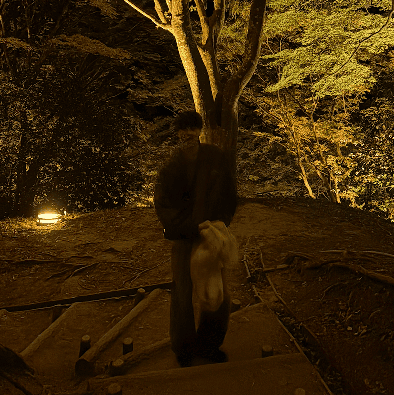

Naoya Takahashi
Portfolio
about

2003年8月20日生まれ。静岡県浜松市出身。
現在は愛知工業大学情報科学部に通っている髙橋直矢です。幼少期から父のものづくりを見ていて、いつか自分もなにか作ってみたいと感じていました。高校時代、パソコンひとつでものづくりができるITの技術に魅力を感じ、情報学を学ぶために大学に進学しました。
大学ではプログラミング、3DCGなどを主に学びました。現在は研究室で画像処理を用いたハンドボールのフォーム分析を行っています。また、個人でアプリ・システムの開発などにも挑戦しています。将来は思い描いたものをITの技術で作り出せるエンジニアになりたいと思っています。
works